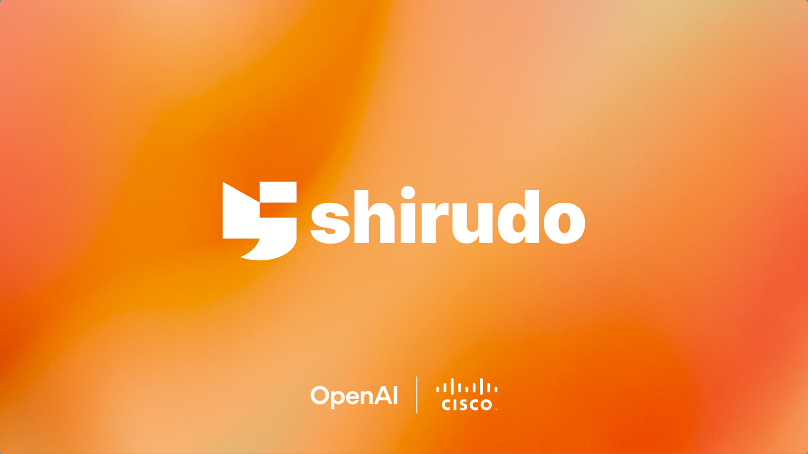
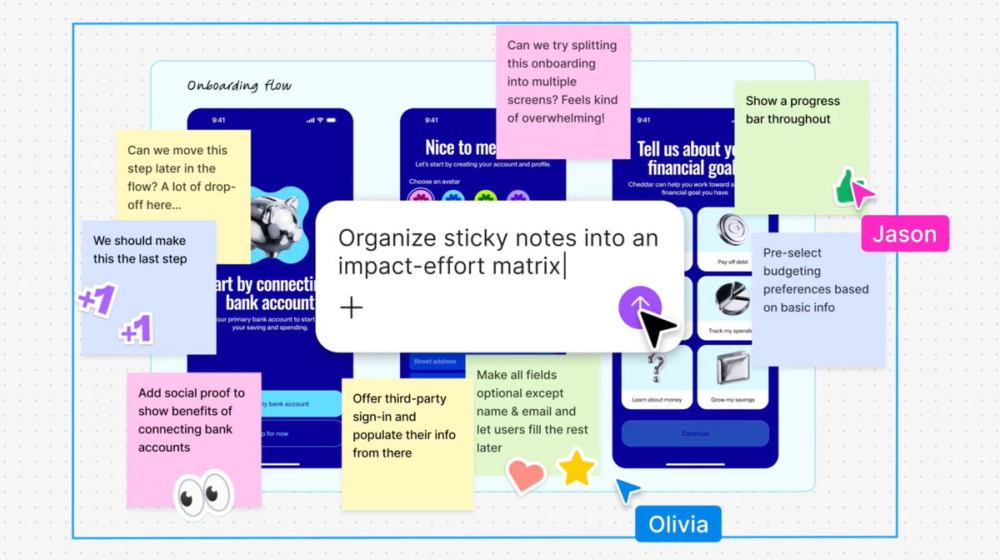
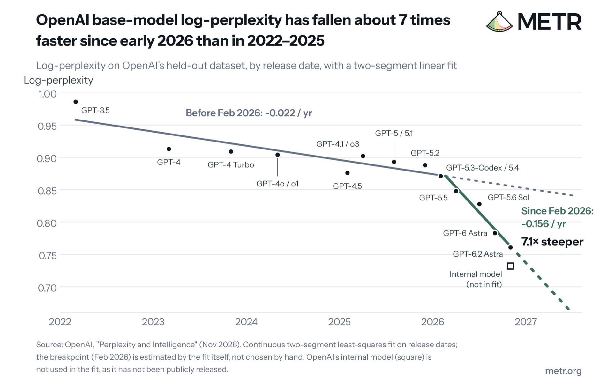

01安全 头条
OpenAI 与 Cisco 推出开源 Linux 运行时 Shirudo：用 eBPF 盾在不停机的情况下挡住漏洞路径
11-24 05:20 至 05:37 北京时间今日头条独立来源 3 家

OpenAI 与 Cisco 联合发布 Shirudo 的官方配图（图片来源：OpenAI og:image）
介绍
北京时间 11 月 24 日 05:20，Cisco 新闻稿与博客率先宣布与 OpenAI 共同推出开源项目 Shirudo（日语「盾」之意）；05:37，@OpenAI 发出主帖。官方介绍称，Shirudo 让安全团队测试并部署针对漏洞路径的临时盾，在服务继续运行的同时为正式补丁争取时间。盾在加载前需密码学签名与校验，并可借助 TPM 留下可验证记录。OpenAI 写道，在一次受控测试中，由 Codex 生成的盾为 Java 的 Base64 解码器增加输入检查，并附着到正在运行的 Elasticsearch 进程，从而挡住 Java4Shell 利用尝试且无需重启。Cisco 博客还提到该项目已对 Java4Shell 与一处 PHP 漏洞写出检测与拦截代码。代码与文档见 GitHub 与 docs.shirudo.dev。
为什么重要
补丁验证与全量部署往往以天或周计，而同一系统调用既可能是攻击路径也可能是正常请求。把「先挡住、再修补」做成开源、可签名的运行时，是安全团队与智能体协作的一次明确产品化；它不等于已经在生产环境大规模落地，也不等于可以替代正式补丁。
要点
- Cisco 新闻稿署 2026-11-23T21:20:00Z（北京时间 11-24 05:20），OpenAI 主帖为 05:37（21,626 赞、13,595 次收藏）。
- 核心机制是 eBPF：在运行中的 Linux 上观察或拦截特定操作，官方强调盾需签名验证，并可用 TPM 记录加载或卸载。
- OpenAI 举例：Codex 生成的盾在受控测试中挡住针对运行中 Elasticsearch 的 Java4Shell 利用，且服务无需重启。
- 项目开源，GitHub 为 shirudo-dev/shirudo；安全团队仍掌控是否把盾从观测升格为拦截，正式补丁到位后应退役临时盾。
02产业未证实项
亚马逊宣布收购 Decart 优化技术与创始团队；媒体称约 75 亿美元，官方未公布价格
11-23 21:46（上期窗内未核）至 11-24 23:51 北京时间主线独立来源 3 家
媒体报道亚马逊与 Decart 交易的配图（图片来源：CNBC / Getty Images og:image）
介绍
亚马逊官方新闻稿时间戳为 2026-11-23T13:46:59Z（北京时间 11 月 23 日 21:46），落在上期窗口内，但上期未能打开原文，只在速览中把「亚马逊收购 Decart」标为未核窗口、留待本期。官方确认：亚马逊已签署协议，购买 Decart Optimization Stack（DOS）背后的专有技术，并引进联合创始人 Dean Leitersdorf、Moshe Shalev、Orian Leitersdorf 及其研究与工程团队。新闻稿称双方自 2025 年起合作优化 Trainium，交易完成仍须满足交割条件并获得监管批准。官方未披露对价。CNBC（11-24 02:23）与 TechCrunch（11-24 01:14，11-24 23:51 另有跟进）均写媒体援引知情人士称对价约 75 亿美元，并写亚马逊拒绝对交易条款置评。
为什么重要
这是云厂商用软件栈补齐自研芯片生态的一次大动作，直接关系到 Trainium 能否更方便地承接原本跑在英伟达等硬件上的工作负载。金额未被官方确认，本期只把它当作媒体转述，并标明未证实。
要点
- 官方确认收购的是 DOS 专有技术，以及三位联合创始人与其 AI 研究、工程团队；完成交易仍须监管批准。
- 亚马逊新闻稿没有公布价格。CNBC 与 TechCrunch 均写「若干媒体援引知情人士称约 75 亿美元」，并写亚马逊拒绝就条款置评。该数字未证实。
- 官方称自 2025 年起与 Decart 合作，目标是优化推理与自研硅片（文中提到从 Graviton 到 Trainium）性能，使客户能以更低成本训练和运行模型。
- 上期热榜已出现相关条目但未核时间；官方稿实际在周一 21:46，周二上午起的 CNBC、TechCrunch 报道落入本期窗口。
⚠ 未证实
03研究
DeepMind 用 Gemini 4 智能体团队与 Lean 改进量子算法：聚变相关电路计算成本降至约 1/11.8
11-24 01:00 北京时间主线独立来源 2 家
DeepMind 介绍智能体团队与 Lean 验证改进量子算法的官方配图（图片来源：DeepMind 博文 hero）
介绍
上期已预告为窗后条目。Google DeepMind 博文时间戳为 2026-11-23T17:00:00Z（北京时间 11-24 01:00），@GoogleDeepMind 同期发帖。官方写道，多支 Gemini 4 智能体团队并行工作，每四小时在虚拟会议中交换与辩论想法，并用形式化证明助手 Lean 验证优化在数学上成立。在惯性约束聚变的一项性质计算上，智能体团队把综合了量子比特数与操作次数的计算成本降低了 11.8 倍，所需容错量子比特从 5,650 降到 4,338。对一种常见光敏分子，量子模拟成本降为约 1/8；对代谢药物的关键酶 Cytochrome P450，改进约 2.5 倍，内存需求从 481 降到 333 个量子比特。文中还给出 Grover 算法一种具体实现 2.57 倍加速，以及 arcsin 例程 290 倍加速。官方在 GitHub 开源经验证的解法与 Lean 库。@GoogleDeepMind 主帖写「最多可把未来模拟成本降到约 1/10」，本期以博文中的分项数字为准。
为什么重要
这不是「量子计算机已经商用」，而是把智能体搜索与形式化验证接到算法设计上，并公开可检查的 Lean 产物。数字全部来自官方自评，适用范围限于文中给出的问题与实现。
要点
- 官方时间戳 11-24 01:00；智能体每 4 小时开一次会对齐，优化需通过 Lean 验证后才进入共享笔记。
- 惯性约束聚变相关电路：计算成本 11.8×，容错量子比特 5,650 → 4,338。
- 光敏分子模拟约 8× 更便宜；Cytochrome P450 约 2.5×，量子比特 481 → 333。Grover 一种实现 2.57×，arcsin 290×。
- 开源仓库为 google-deepmind/formal-quantum-computation。推文中的「最多约 10 倍」不加进要点，以免盖过博文里的分项结果。
04产品
Google Search AI Mode 扩展 Personal Intelligence：Wallet 即日起可选接入，Drive 与 Gemini 应用数周后跟进
11-24 01:00 至 05:39 北京时间主线独立来源 3 家

Google 介绍在 AI Mode 中连接 Wallet、Drive 的官方配图（图片来源：Google Blog og:image）
介绍
上期已预告为窗后条目。Google 官方博文时间戳为 2026-11-23T17:00:00Z（北京时间 11-24 01:00）。文中写明：即日起开始推送，用户可在 Search 个性化设置里选择安全连接 Google Wallet；Drive 与 Gemini 应用将在未来数周跟进。这些连接将与已有的 Gmail、Calendar、Photos 一道，为 AI Mode 提供更个人化的回答。官方强调连接为选择加入，可随时开关；若连接 Wallet，「AI Mode 只能读取账户信息，不能转移、管理或投资你的资金」。@Google 于 05:39 转发同一说明。TechCrunch（03:14）与 9to5Google（01:36）作了交叉报道。
为什么重要
搜索开始直接使用钱包与文档里的个人上下文，边界在于可选、可关，以及 Wallet 只读。Drive 与 Gemini 应用尚未在本期窗口内开放，不能写成已经可用。
要点
- 即日起可选接入 Wallet；Drive 与 Gemini 应用「将在未来数周跟进」。它们加入已有的 Gmail、Calendar、Photos。
- 钱包为只读：官方写明 AI Mode「不能转移、管理或投资你的资金」。
- 入口在 Search 个性化设置的 Connected Apps；可随时开关，并遵循 Google 隐私政策。
- 这是能力扩展，不是新的独立搜索产品；未连接时不会使用这些个人数据。
05产品
Claude 把连接器与技能合并进统一 Plugins 体验；Free 等个人套餐现已上线，Team 将从 11 月 30 日起推送
11-24 01:31 至 04:56 北京时间主线独立来源 3 家
Claude 文档中关于连接器、技能与插件关系的说明卡（图片来源：Claude Docs og:image）
介绍
上期已预告为窗后条目。Claude 帮助中心文章《Manage plugins, skills, and connectors from one Plugins page》的修改时间为 2026-11-23T17:31:01Z（北京时间 11-24 01:31）；@claudeai 于 04:56 发帖称，连接器与技能合并为插件，已在 Free、Pro、Max 和 Ultra 套餐上线，Team 与 Enterprise 即将支持，并请用户浏览「10,000+」插件。帮助中心写得更具体：侧边栏原先的 Customize 将改为 Plugins，一页取代原来分开的 Skills、Connectors、Plugins 标签；Free / Pro / Max / Ultra 现已可用，Team 从 2026 年 11 月 30 日起逐步推送，Enterprise 将在随后数周默认开启。文章还写，自 11 月 30 日起，若组织关闭了 Skills，桌面端插件也会被一并阻断。@claudeai 帖中的「10,000+」未出现在该帮助中心正文，本期把它记作官方帖表述，不另写成已核目录总量。
为什么重要
这是 Claude 扩展能力入口的一次整合，影响用户怎么找到和安装工具，也给 Team / Enterprise 管理员设了 11 月 30 日的策略截止日期。它不是新模型发布。
要点
- 个人套餐 Free、Pro、Max、Ultra 现已可用；Team 从 11 月 30 日起逐步推送，Enterprise 在随后数周默认开启。
- 侧边栏 Customize 将改名为 Plugins，用一个页面管理插件、技能与连接器。已安装项目仍可继续使用。
- 从 11 月 30 日起，若组织关闭 Skills，Claude 桌面端的插件也会被阻止；管理员若要保留插件，需先打开 Skills。
- @claudeai 写「Browse 10,000+ plugins」；帮助中心正文未给出这一总量，只作为官方帖表述。
06产品
ChatGPT 对话页推出面向日常对话的 GPT-6.2 Sol，并宣布 12 月 23 日下线 GPT-5.6 Sol 与 Terra
11-24 03:04 至 05:42 北京时间主线独立来源 3 家
媒体报道 ChatGPT 下线 GPT-5.6 并推送 GPT-6.2 Sol 的配图（图片来源：TechRadar og:image）
介绍
GPT-6.2 Sol 作为模型本身已在更早的简报中出现，本期不把它写成全新发布。北京时间 11-24 03:04，@ChatGPT 宣布在 Chat 标签页推出面向日常对话优化的 GPT-6.2 Sol，称其更擅长处理复杂请求和在线查找。05:42，同一账号宣布：12 月 23 日将在 Chat 中停用 GPT-5.6 Sol，并在 Work 与 Codex 中停用 GPT-5.6 Sol 与 Terra；跟帖解释，随着新模型推出，一般会退役两代之前的模型，以腾出算力。官方帖未在窗口内给出 API 同步下线时间表。TechRadar 与 9to5Mac 对这两条消息作了交叉报道。
为什么重要
对日常使用者来说，更重要的不是「又一个 Sol」，而是 12 月 23 日这条明确的下线日，以及官方把算力让给更新模型的原则。它会改写 Chat、Work 与 Codex 里还能选哪些 5.6 模型。
要点
- 12 月 23 日：Chat 中的 GPT-5.6 Sol，以及 Work 与 Codex 中的 GPT-5.6 Sol 和 Terra 将被停用。
- 官方跟帖：推出新模型时，一般会退役两代之前的模型，以便把算力留给更强的模型。
- 同一天早些时候，Chat 标签页推出面向日常对话优化的 GPT-6.2 Sol；这是对话页上的投放，不是该模型的首次亮相。
- 窗口内未见 API 弃用文档与这次 Chat/Work/Codex 下线一一对应，不把 API 下线写成已宣布。
07产品
Figma agent 在 FigJam 与 Figma Slides 的付费方案中正式可用
11-24 02:06 北京时间主线独立来源 3 家

Figma 介绍 agent 进入 FigJam 与 Slides 的官方配图（图片来源：Figma Blog og:image）
介绍
上期已预告为窗后条目。Figma 官方博文署 November 23, 2026，写明 Figma agent「现已在所有付费方案的 FigJam 和 Figma Slides 中正式可用」，并支持部分连接器与附件。@figma 于北京时间 11-24 02:06 发帖，列举把其他工具里的信息带到画布、用 Specs 把讨论变成下一步，以及根据已有文档和品牌生成并修改演示文稿。这是把已有 agent 能力扩展到白板与幻灯片，而不是新的独立产品线。
为什么重要
设计协作里的「讨论—规格—幻灯片」开始由同一个 agent 串起来。可用性限定在付费方案，且连接器是「部分」开放，不能写成所有套餐、所有数据源都已打通。
要点
- 官方表述为在 FigJam 与 Figma Slides 的所有付费方案中 generally available，并带有部分连接器与附件。
- 官方帖列出的能力包括：用连接器和附件把外部信息拉进画布；用 Specs 整理下一步；根据已有文档和品牌生成并修改演示。
- 博文作者为 Figma 产品总监 Jinen Kamdar，日期署 11 月 23 日；X 主帖在北京时间 11-24 02:06，落入本期窗口。
08研究
METR：OpenAI 预训练损失自 2026 年初以来的下降速度约为 2022–2025 年的 7 倍
11-24 16:00 北京时间主线独立来源 2 家

METR 绘制的预训练损失下降曲线（图片来源：METR 博文配图）
介绍
METR 博文日期为 2026 年 11 月 24 日，时间戳 2026-11-24T00:00:00-08:00（北京时间 16:00）。文章基于 OpenAI 近日公布的、在一份固定留出数据集上测量的 13 个自 GPT-3.5 以来的基座模型 log-perplexity，指出 2026 年初以来损失下降速度约为 2022–2025 年的 7 倍。若这一节奏持续，OpenAI 用大约 六个半月就能走完当年 GPT-3.5 到 GPT-4.1、花了三年的损失下降。作者同时强调，损失通常会越来越难降，而公开基准上并未看到同等幅度的加速，METR 内部对如何解读也没有形成一致结论。文中提到微软已用同一评测集公布过自己的数字（即上期主线中的 MAI-2 Base）。窗口内 @METR_Evals 没有原帖。
为什么重要
这是对上期「困惑度倡议」的跟进解读，而不是新的官方训练曲线。它提醒：预训练损失加速未必立刻等于能力和基准同步加速，需要更多数据集与训练信息才能下更强的判断。
要点
- METR 的判断是：自 2026 年初以来，该留出集上的预训练损失下降速度约为 2022–2025 年的 7 倍。
- 若节奏持续，GPT-3.5 到 GPT-4.1 那段花了三年的损失下降，可能被压缩到约六个半月。
- METR 写明内部没有一致结论：数据可能高估真实进展，基准也许才是更恰当的能力指标，也有人认为损失本身更深。
- 这是对 OpenAI 已公布曲线的解读，不是 METR 自己训练了这些模型；窗口内官方 X 账号无原帖。
OpenClaw 等发布 ShellBench：100 个日常任务、53,100 次评分；GPT-6 Astra 三试中至少一次完成 75.1%11-24 08:00官方博文署 11 月 24 日（时间戳 2026-11-24T00:00:00Z，北京时间 08:00）。基准由 OpenClaw 与 Hugging Face、Red Hat、UC Berkeley 等合作，基于超过 1,000 万条匿名真实交互构造 100 个任务，共 53,100 次评分。文中写，在 100 题、五套 harness 的评测里，GPT-6 Astra 三次尝试中至少一次完成 75.1%，三次全部成功则为 48.8%；全部运行中有 15.7% 至少未通过一项安全检查。完整论文尚未放出。
Mantic 与 Thinking Machines：用 Tinker 微调的 Inkling 2 Small 预测智能体，单次预测成本约为 Fable 5.2 的 1/1511-24 15:00Thinking Machines 官方文章署 Nov 24, 2026，为与 Mantic 的客座合作。文中写，该智能体由 Inkling 2 Small 在 Tinker 上做后训练，在 200 道留出数值题上的准确度大致相当于 Fable 5.2（medium），但每次预测成本约为后者的 1/15。AIHOT 时间戳为 11-24 15:00。
Sakana 发布 300 亿参数 Namazu Small：官方称 25 项基准平均分超过同规模及约 4 倍规模的 Nemotron 311-24 23:00官方页写作 November 25, 2026，时间戳 2026-11-25T00:00:00+09:00，合北京时间 11-24 23:00，落入本期窗口。模型在 NVIDIA Nemotron 3 Nano 的预训练基座上由 Sakana 完成持续预训练与后训练，总参 300 亿。官方称在合计 25 项基准的平均分上，不仅超过同规模的 Nemotron 3 Nano（30B-A3B），也超过总参约 4 倍的 Nemotron 3 Super（120B-A12B）。例如 BrowseComp 为 73.5，对比 Nano 29.3、Super 36.1。数字为官方自评。
Claude Install as app：官方页标注 11 月 24 日，可将 artifacts 装成 Mac / Windows 桌面应用11-24（未给时刻）官方文章《Turn artifacts into Mac and Windows apps》只写 Date November 24, 2026，没有时刻。功能在 Mac 与 Windows 版 Claude 以 beta 推送，安装后的应用有独立图标和窗口，底层 artifact 更新会同步；权限分默认、应用权限与完全访问三档。窗内 @claudeai / @AnthropicAI 未见对应原帖，至 11-25 上午的补充检索也未找到官方推文，故只作速览，不把具体钟点写成已核。
Claude Skills over MCP 进入公开测试，Tasks 与 Elicitation 一般可用11-24（未给时刻）官方文章署 Date November 24, 2026，同样没有时刻。Skills over MCP 允许 MCP 服务器在工具之外发布技能，并按需加载。文中称该能力在 Claude 与 Claude Code 公测，Pro、Max、Ultra 默认开启，Team 需管理员打开，Enterprise 即将支持。窗内未见对应官方原帖，只作速览。
OpenAI 推出 OpenWorks：资助本地 AI 专家免费帮助小企业11-24 01:44@OpenAI 于 11-24 01:44 发帖（引用 @jakeottiger），介绍新项目 OpenWorks，资助本地 AI 专家免费帮助小企业发展工具与技能。官方站点为 openai.com/openworks。本期不展开为独立主线。
Claude 为企业提供与 ZDR 兼容的 EFS 滥用检测公测11-24 02:15@claudeai 于 11-24 02:15 宣布，Zero data retention（ZDR）与 Enterprise Frontier Safeguards（EFS）进入面向合格企业的公测，可在多轮请求中查找滥用，并称与超过 100 家客户共同开发。提供范围为 Claude Platform、AWS 上的 Claude Platform、Amazon Bedrock 以及 Google Cloud 上的 Claude，Microsoft Foundry 即将支持。本期未另开官方长文核对，只作速览。
补报：AWS 安全博客 11 月 20 日写 Cairn 智能体自主发现并利用 0-day；上期周末合刊未收录，官方页本期未能打开官方 11-20；媒体跟进 11-24 20:30Amazon Threat Intelligence 官方博文日期为 2026 年 11 月 20 日，落在上期周末合刊窗口，但当时未收录。AIHOT 于 11-24 20:30 收录了 Ars Technica 的跟进报道。本期多次请求 AWS 安全博客未成功打开（连接失败），Ars Technica 返回 405，因此不转写搜索摘要里的分钟数、漏洞名或归因结论。需要的话可直接看官方文：aws.amazon.com 该安全博客。
已覆盖不重做：黄仁勋复职与特朗普表态、GLM-5.4、微软 MAI-2 0.819、Claude Ship、Anthropic 企业访谈、两州诉 SpaceX、IPO 前机构重仓、AISI 监视器、黎曼猜想 Lean 证明、上市首日、Inkling 2 Mini、Gemini 4 模型发布、GPT-6 Cyber 948 个 Linux LPE（11-04 主线，@OpenAI 本日视频为回顾）上期 / 11-04见 11-22 周末合刊、11-23 期及更早各期。@OpenAI 于 11-24 07:25 再发视频回顾 GPT-6 Cyber 验证 948 个可本地提权的 Linux 内核漏洞，研究原文仍是 11 月初的两篇官方文章，不重写为新发现。
窗后已出现、留待下期：OpenAI GPT-6 蛋白质设计预印本、Cognition SWE-2.1、Anthropic Siren、Anthropic 股价跌破发行价、Sand.ai MAGI-2、Google Workspace MCP 等11-25@OpenAI 蛋白质设计线索发于 2026-11-24T21:02:58Z（北京时间 11-25 05:03）。Cognition SWE-2.1 官方时间戳为 2026-11-24T08:00:00-08:00（北京时间 11-25 00:00），落在窗口结束点上，按惯例留待下期。Siren 的 AIHOT 时间为 11-25 05:32，Anthropic 股价相关报道为 11-25 02:30，均在本期窗口之后。
AIHOT 日报 11-24/11-25 + latest/hot/search读到
11-24 日报覆盖至 08:00，多数条目属于上期；11-25 日报用于捕捉周二 08:00 至 24:00，并标明 11-25 00:00 之后的窗后条目（蛋白质设计、SWE-2.1、Siren、跌破发行价等）。
X 公开账号与检索读到
已用公开 search_posts_all / get_users_posts 读取 OpenAI、ChatGPT、AnthropicAI、claudeai、Google、GoogleDeepMind、figma、Cisco、MiniMax_AI、METR_Evals、cognition 等。@AnthropicAI 窗内原帖 0 条；@METR_Evals 窗内 0 条。
用户 @HhhharryRen 原帖没更新
窗内 0 条，接口正常。
X 书签（user-X get_users_bookmarks）读到
连接正常，返回 34 条；窗内 0 条新收藏，最新仍为 2026-11-02 @0xluffy_eth。读到 · 没更新。
WaytoAGI 飞书 wiki没更新
盒子浏览器打开公开页面（Public access，无需登录）。目录未见 11 月 24 日或 11 月 25 日栏目；Last updated: Nov 25 仅为页面戳。读到 · 没更新。
官方页面核对读到
已打开 OpenAI / Cisco Shirudo 稿、亚马逊 Decart 新闻稿、DeepMind 量子算法博文、Google AI Mode 博文、Claude Plugins 帮助中心、Figma 博文、METR 博文、ShellBench、Thinking Machines、Sakana Namazu、Claude Install as app 与 Skills over MCP。OpenAI 开发者 Codex 监控文 403；AWS Cairn 安全博客本次未能打开。
媒体交叉读到
已打开 CNBC 与两篇 TechCrunch 的 Decart 稿、TechCrunch 与 9to5Google 的 AI Mode 稿、Business Upturn 的插件稿、Figma 交叉稿 AI.info，以及 TechRadar / 9to5Mac 对 5.6 下线的报道。The Next Web 与 Ars Technica 本期 403/405。
窗后已出现、留待下期读到
精确时间在 11-24T16:00:00Z 及之后：OpenAI 蛋白质设计预印本（21:02 UTC）、Cognition SWE-2.1（08:00 PT）、Anthropic Siren、Anthropic 股价跌破发行价、Sand.ai MAGI-2、Google Workspace MCP 等。